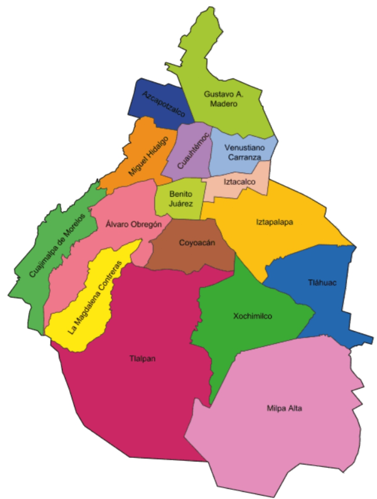
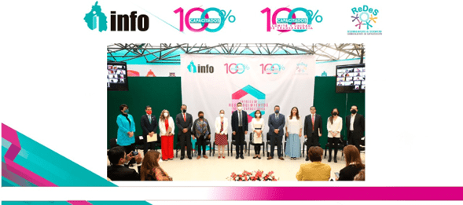
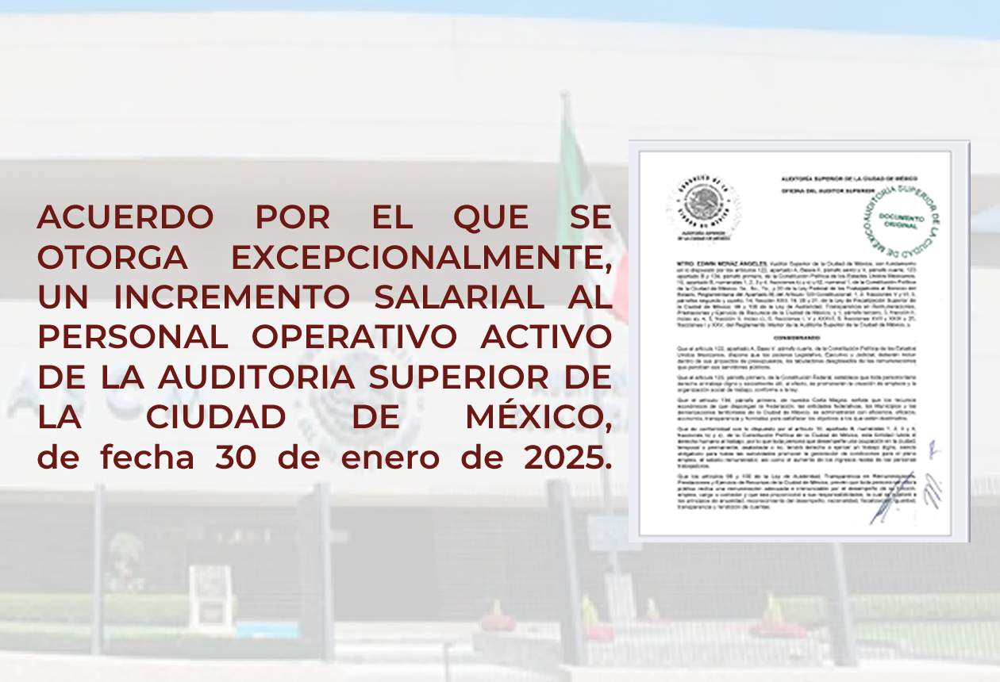

Descubre los resultados de nuestra labor fiscalizadora y accede a información transparente.
Promoviendo la excelencia administrativa en las entidades de CDMX.

Este documento reúne los informes de resultados de las auditorías practicadas a los entes obligados.
Asistencia para navegar la información de transparencia y resolver tus dudas.

